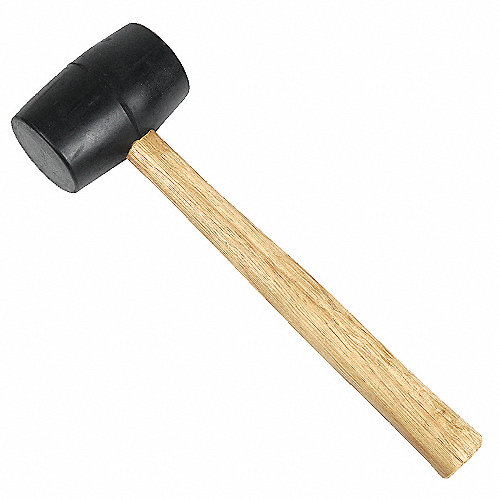
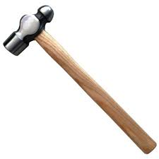

Martillo multiuso de alta calidad, fabricado con acero forjado resistente para máxima durabilidad y un rendimiento óptimo en todo tipo de trabajos. Su mango ergonómico de fibra de madera con recubrimiento antideslizante garantiza seguridad incluso durante largas jornadas. Ideal para carpintería, reparaciones y proyectos generales, combina fuerza y precisión con un diseño resistente a impactos y corrosión
500$

Mazo multipropósito de alta calidad, fabricado con madera de haya premium y cabeza de goma resistente de doble cara (dura y blanda). Su diseño ergonómico y ligero garantiza un agarre cómodo y precisión en trabajos de carpintería, ensamblaje y más, sin dañar superficies. Resistente a impactos, antideslizante y duradero, con un precio de 300$ y garantía de 6 meses. ¡Ideal para uso profesional y doméstico!
300$

Fabricado con cabeza de acero forjado de alta calidad para máxima resistencia y precisión, y mango ergonómico de fibra de vidrio que reduce vibraciones. Ideal para remachado, moldeado y trabajos en metal. Disponible en tamaños de 16, 24 y 32 onzas, con precios desde $15.99 USD y 2 años de garantía. Perfecto para profesionales y aficionados que buscan una herramienta confiable y duradera.